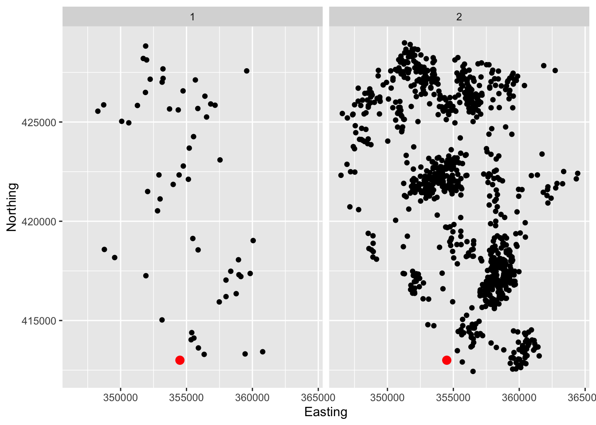
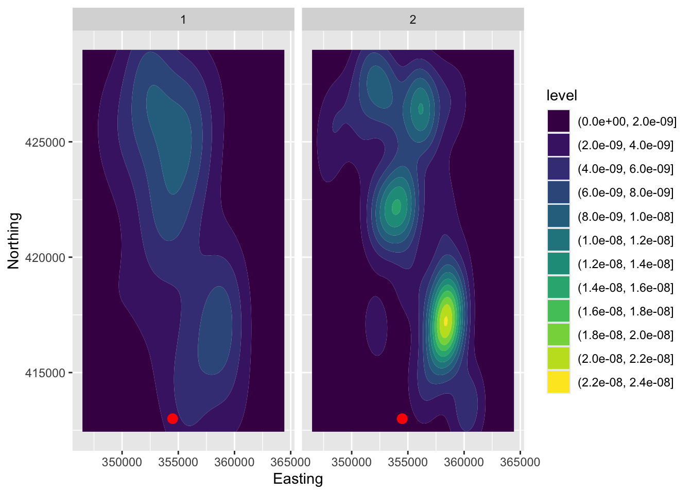

1.2 Models for point pattern data
The lcancer dataframe in the sm package records the spatial positions of cases of laryngeal cancer in the North-West of England between 1974 and 1983, together with the positions of a number of lung cancer patients who were used as controls. The data have been adjusted to preserve anonymity.
data(lcancer, package = 'sm')
ggplot(lcancer, aes(Easting, Northing)) +
geom_point() +
annotate('point', x = 354500, y = 413000, col = 'red', size = 3) +
facet_wrap(~ Cancer)
When the information in spatial data is solely the location at which they sit, density estimation can be a useful tool.
ggplot(lcancer, aes(Easting, Northing)) +
geom_density2d_filled() +
annotate('point', x = 354500, y = 413000, col = 'red', size = 3) +
facet_wrap(~ Cancer)